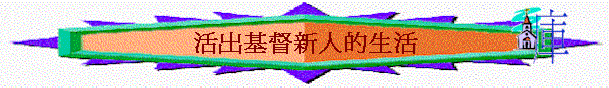

F.活出基督---活出基督新人的生活(3:18-4:6)
引言：
人與人的關係要有美好的維持，你認為需要有什麼元素？
3:18-4:1題及丈夫與妻子，父母與兒女，主人與僕人的關係，可能彼此也是信徒，大家似乎是平等，但在主內的關係上仍然要學習什麼事，才能得主喜悅？
一.
夫婦生活(3:18-19)
1.
妻子要有什麼表現？為何要有這表現？你同意嗎？若一個姊妹不能有這表現？你差想她的家庭或先生會乘樣？
2.
丈夫又要如何？有「愛」的表現是怎樣？有什麼是「苦待」的表現？
3.
在教會中,有沒有一些已婚肢體及家庭是你所欣賞？
二.
家人生活(3:20-21)
1.
作兒女要怎樣？為何要這樣做？以弗所書六章又補充了什麼事情？
2.
作父親又要怎樣？「不要惹兒女的氣」是什麼意思？為何要這樣做？有什麼表現是可以令他們失了志氣？
3.
弗6:4又補充了什麼事？
三.
主僕生活(3:21-4:1)
1.
僕人要怎樣？為何要聽從？又要抱什麼心態服事主人？若做到會怎樣？
2.
主人又如何？有什麼表現不是「公公平平」?
3.
你認為以上事情難不難做到？
四.
禱告生活—要恆切(4:2-4)
1.
「你們要恆切禱告」是什麼意思？英文怎麼譯？表達什麼真理？
2.
作一個祈禱的人要有什麼表現？
3.
你滿意你的禱告生活？
五.對外相處—要和睦(4:5-6)
1.
我們要怎樣與世人相處？
2.
「愛惜光陰」是什麼意思？與與外人相處有什麼關係？
3.
為何要「用智慧與外人交往」？此智慧又可指什麼？(可參考雅3:17)
4.
我們的言語又要怎樣？何謂「和氣」？「好像用鹽調和」是什麼意思？